Does the G4 gated band lower or raise the curtailment cost of C1 and A1, and how well are the upper tails of the assembled load-shift forecasts calibrated?
On injected load-shifts the G4 band brings the q95 exceedance close to the nominal 0.05 after the load-shift ends and lowers the curtailment cost at tighter limits, but at the headline limit the reduction is small and rests on one Primary. The G4 band (the gated band named G4 in experiment 592) widens a forecast's quantiles on the days after a load-shift is detected. We scored C1 and A1 (the two lag networks assembled in experiment 597; A1 shares one lag encoder) with and without that band, beside C0 (an earlier lag network) and E2 (a network that reads no lags), using the avoidable curtailment cost of experiments 277 and 478, unchanged. Nothing was refitted. In the one real event where a Primary's load rose (D16), the lags-masked twin (the lag network with every lag input masked, which the G4 band uses as its wide quantiles) forecast as low as the lag network, so the band did not help there. Terms: q95 and q99 are the 95th and 99th percentile forecasts; exceedance is the share of rows where the observed power lies above one of them; the bank is experiment 581's set of injected load-shifts; the minimum detectable effect is the half-width of a Bonferroni interval (an interval widened for four counted tests). Intervals in the Results are 98.75% intervals, and intervals in the figures are 95%.
Cost units. The cost is pounds per Primary-day: the mean over day-ahead forecast rows (12 to 36 hours ahead) of the cost of the energy the forecast curtailed, priced at £2,000 per megawatt-hour, plus 20 times that price for any energy still above the limit after curtailment, minus the same cost for a perfect forecast. The limit is a fraction (0.9, 0.75, or 0.5) of the Primary's largest metered power before 2025-10-01. The cost is defined only for the six MW Primaries, whose meters show the sign of the flow.
Figures
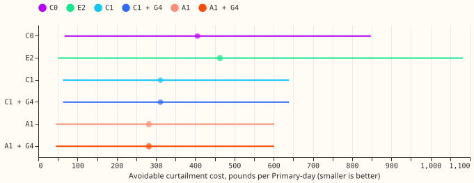
Avoidable cost on event-free rows, limit 0.9 of the past maximum, six MW Primaries, 5 test months. Dot: estimate; line: 95% interval from resampling Primary-months. The gated and plain forecasts coincide here: the wide band changes q95 on only 127 (C1) and 159 (A1) event-free rows, all at D14 in October 2025, and those rows have no planned curtailment at limits 0.9 and 0.75.
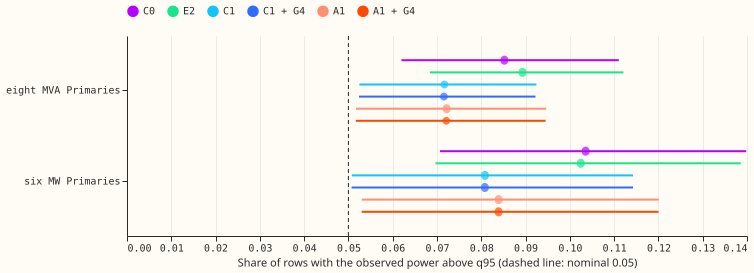
Share of event-free rows with the observed power above q95 (dashed line: the nominal 0.05), 24 to 120 hours ahead. At the six MW Primaries every interval lies above 0.05, so the upper tail is too thin there.
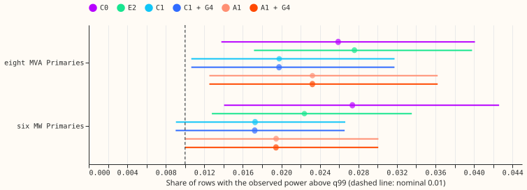
The same for q99 (dashed line: 0.01). The C1 interval at the six MW Primaries includes 0.01.
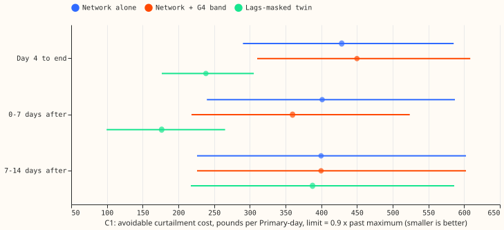
C1 on the injected load-shifts of 15 and 30 days (six MW Primaries, limit 0.9). Blue: the network alone on contaminated lags; orange: with the G4 band; green: the lags-masked twin, which reads no lags. Intervals resample events; smaller is better.
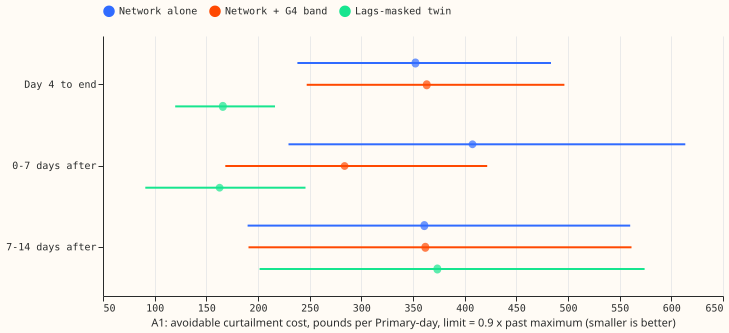
The same for A1.
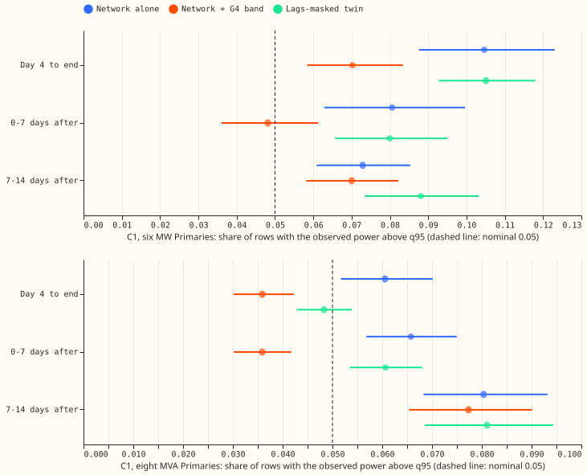
C1: share of rows with the observed power above q95, by phase of an injected load-shift of 15 or 30 days, for the six MW Primaries (top) and the eight MVA Primaries (bottom). Dashed line: the nominal 0.05.
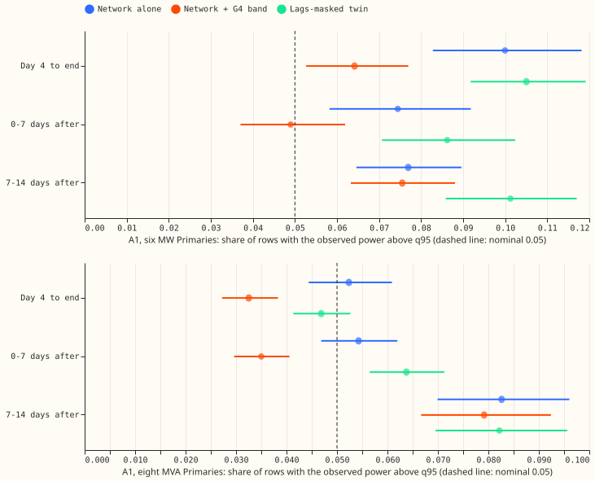
The same for A1.
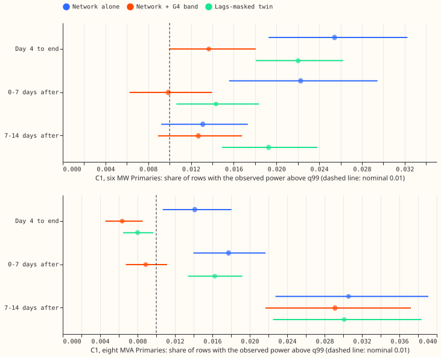
C1, q99 (dashed line: 0.01).
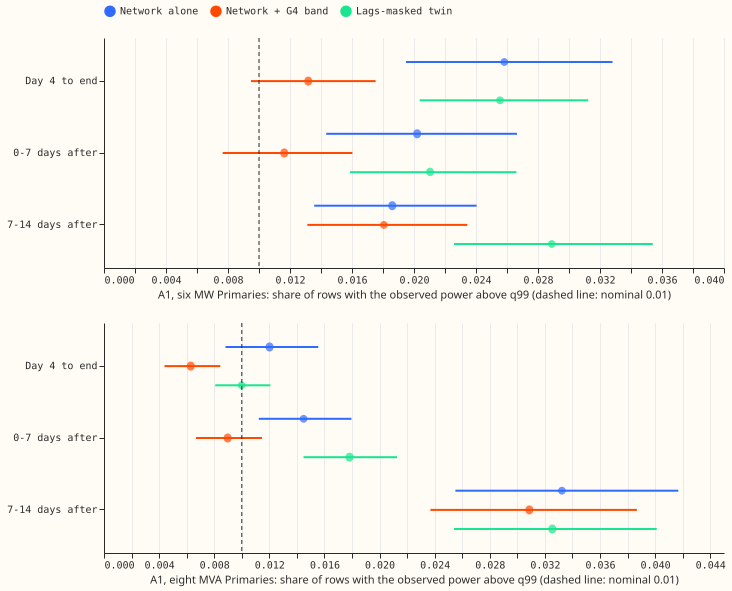
A1, q99.
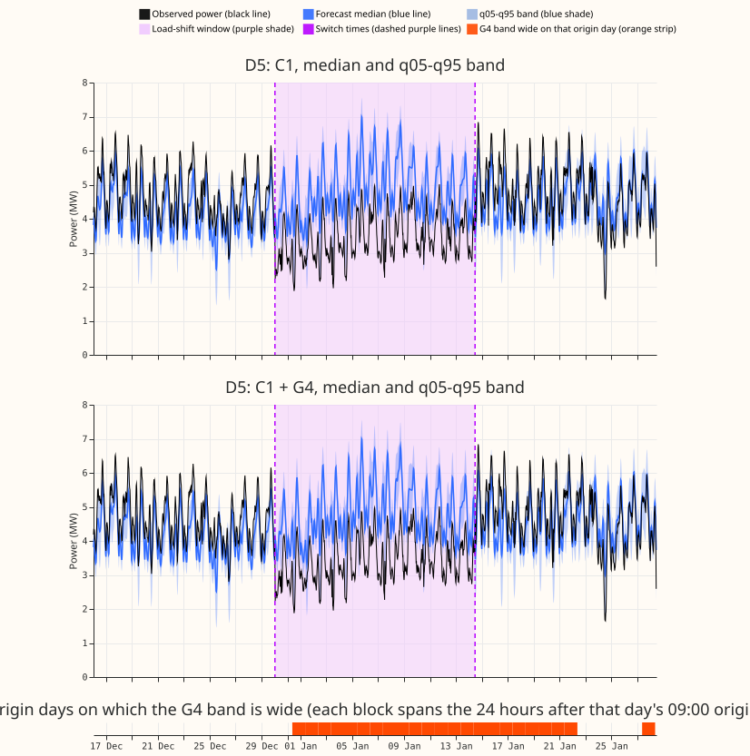
Primary D5 in the maintainer's example event, with day-ahead forecasts. The readings fall within 30 minutes of the labelled start (2025-12-30 01:00 UTC) and recover over the morning of 2026-01-14, so the labelled load-shift times (dashed purple lines) match the readings; experiment 580's window starts about a day earlier. Observed power averages about 1.2 to 1.4 MW lower inside the window, while both median forecasts stay at or above the normal running level and reach about 7 MW at peaks. The orange strip marks origin days on which the G4 band is wide. Coverage is scored against the estimated normal running arrangement, which is not drawn.
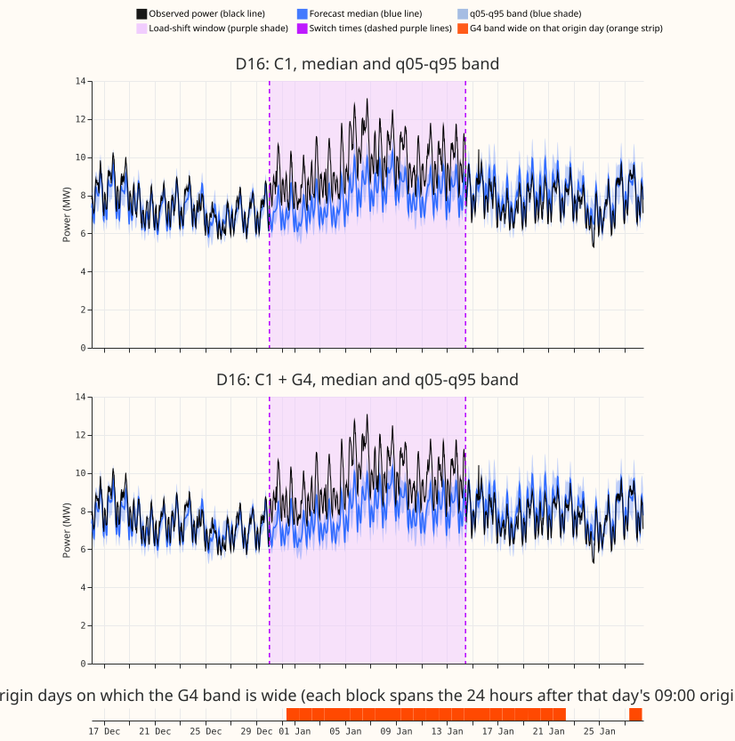
Primary D16 in the same event: its power rises by about 2 MW on average (3 to 4 MW at peaks), and neither forecast follows it. The G4 band is flagged on from 31 December, but its q95 is at most 0.08 MW above C1's. Coverage is scored against the estimated normal running arrangement, as above.
Results
- The q95 and q99 exceedance targets failed (P3). The q95 exceedance on event-free rows is 0.081 (C1) and 0.084 (A1) at the six MW Primaries, not within 0.01 of 0.05; the q99 rate is 0.017 and 0.019, not within 0.005 of 0.01.
- Pre-registered tests (four counted; Bonferroni level 0.0125 each; the results at limits 0.75 and 0.5 are descriptive). Event-free cost, G4 minus plain, six MW Primaries: £0.00 at limits 0.9 and 0.75, +£0.56 (Bonferroni interval 0 to +1.96; minimum detectable effect £0.98) at 0.5 for C1, and -£2.37 (-8.3 to 0) for A1. P1 holds. After an injected end, limit 0.9, 15 and 30 day events: C1 -£41 (-124 to +7; minimum detectable effect £66), A1 -£124 (-268 to -19; £124). P2 holds for A1 and not for C1 at 0.9. At 0.75 and 0.5 both gated forecasts lower the cost (C1 -£1,173 and -£6,535; A1 -£901 and -£3,367, intervals exclude zero).
- Leave-one-out. Leaving D16 out turns the limit-0.9 contrast to +£5.7 (C1) and +£2.5 (A1). The saving comes from D16 in 2025-12, where 13 scored rows per event exceed the limit, so it rests on one real near-limit period and not on six independent events. At 0.75 and 0.5, leaving any one Primary out keeps the sign. The leave-one-out result is audit trigger 4 (see Checks).
- Cost of each arm (event-free, limit 0.9, pounds per Primary-day, 95% interval). C0 406 (67 to 847); E2 463 (50 to 1,082); C1 311 (63 to 639); C1 + G4 311; A1 282 (45 to 602); A1 + G4 282. The ordering at limits 0.75 and 0.5 is the same (A1 and C1 lowest, E2 highest).
- Event rows (within 7 days of a labelled event), limit 0.9. The cost is 28,000 to 36,000 pounds per Primary-day, 70 to 125 times the event-free cost, almost all at D16 during the real December event. At limit 0.9 G4 changes that cost by under £50 per Primary-day. At 0.5 it lowers the cost by £1,415 (C1) and £995 (A1) per Primary-day, with an interval that reaches zero.
- Tail calibration, event-free rows, 24 to 120 h. Share above q95 (nominal 0.05): C1 0.081 and A1 0.084 at the six MW Primaries, C1 0.072 and A1 0.072 at the eight MVA Primaries; C0 0.104 and E2 0.102 at the six. Share above q99 (nominal 0.01): C1 0.017, A1 0.019, C0 0.027, E2 0.022 at the six; C1 0.020 and A1 0.023 at the eight. Over-forecast share of the median: 0.44 to 0.46 for C1 and A1 (0.50 would be balanced).
- Tail calibration after an injected load-shift (15 and 30 days, 24 to 120 h). G4 lowers the q95 exceedance at the six MW Primaries from 0.105 to 0.070 in day 4 to end and from 0.081 to 0.048 in the 7 days after (C1; A1 0.100 to 0.064 and 0.074 to 0.049), and at the eight MVA Primaries from 0.061 to 0.036 (C1; A1 0.052 to 0.033). q99 falls from 0.025 to 0.014 at the six (C1).
- Real December pair (D5 and D16). At D5 in the 7 days after the end, G4 lowers q95 exceedance from 0.49 to 0.31 (A1) and 0.49 to 0.28 (C1). At D16 it leaves the q95 exceedance unchanged in every phase (0.31 for C1 and 0.30 for A1 from day 4 to the end), and leaves the cost unchanged except in days 7 to 14 after the end, where the gated forecasts cost £129 (C1) and £194 (A1) more per Primary-day. At D16, limit 0.9, the C1 cost is £583,000 per Primary-day from day 4 to the end and £115,000 in the 7 days after; the A1 cost is £570,000 and £111,000 (day-ahead rows, 12 to 36 h). Only this one real event (D5 and D16, December 2025) was scored, so the cost reductions at 0.75 and 0.5 come from injected load-shifts.
- Not scored. The manual heuristic and climatology are not stored for these 5 months, and fitting them was outside the brief. C0 and E2 have no injected-bank forecasts, so the bank rows use the lags-masked twin as the reference that reads no lags. The eight MVA Primaries have tail scores only, because their meters hide the sign of the flow.
Checks
- Median minus mean forecast. Not computed: the stored forecasts hold quantiles, and G4 leaves the median unchanged on every row (checks.txt of the export), so the contrasts cannot be moved by a median shift.
- Error of the median beside the tail contrasts. The median is identical in the gated and plain forecasts, so the contrast on the median error is exactly zero.
- Audit triggers. Trigger 4 fired (leave-one-out above). A Sonnet audit re-derived the event-free cost to the penny and confirmed the D16 mechanism (a wider q95 after a sign -1 injection avoids a breach priced at 20 times). The audit found that the claim "event-free differences are zero because the gate is off" was wrong: the gate is on for 190 event-free cost-window rows at D14 in October 2025, and those rows cost nothing extra only because they sit below the limit. At limit 0.5 the event-free effect (+£0.56 for C1, -£2.37 for A1 on a base of about £31,500) comes from 10 and 14 non-zero rows, so its minimum detectable effect is weak evidence. The other triggers did not fire. The claim that G4 does not raise the event-free cost holds only for the firing rate seen, because G4 fired on 190 event-free cost-window rows at one Primary. The known-answer check agreed to within £3 in millions on every system and limit.
- Reviews. The code review ran after the first scoring pass, not before. The code review found one high-severity fault (the report-only group label did not match the export, so D15 and D18 had no rows; fixed and re-run), a real-pair cost window that was 24 to 36 h instead of 12 to 36 h (fixed), and mislabelled interval levels (relabelled 98.75%). Cost, leakage, and units were confirmed. Not changed: no quantile rearrangement (q95 never crosses, per the audit), and bank events are resampled as independent. The figure review failed on the first pass (black used twice, gate strip missing from the legend, two metering groups averaged in the bank exceedance figures, caption numbers); all were fixed.
Caveats
- Row set and cadence. The row set is 5 development test months (2025-10, 2025-12, 2026-01, 2026-03, and 2026-06; the injected bank covers the same months), 16 Primaries, and forecasts 0 to 120 hours ahead, refitted on days 0 and 14 of each month and averaged over seeds 0 and 1. The forecasts are the stored forecasts of experiments 584, 591, and experiment 593 (the stored export), with the G4 band of experiment 597. July 2026 is unused.
- Cost is against the metered flow, tail calibration against the estimated normal running arrangement. The two coincide outside the verified events.
- Injected events overlap. Event intervals resample events as independent, although several share a Primary and month.
- Unlogged events. NGED says some load-shift events are missing from its logs, so event-free rows may hold events no label covers.
- Nothing here is adopted for production.